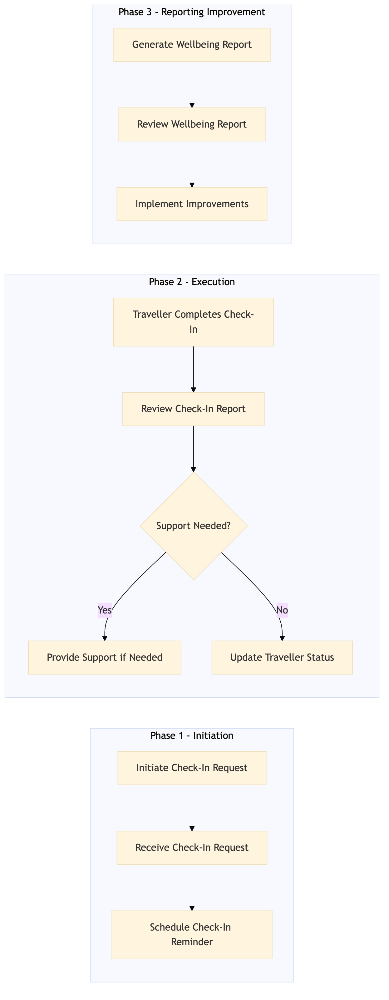

This process document outlines the management of Traveller Wellbeing Check-In, ensuring that all travellers are monitored and their wellbeing is regularly checked during their trips.
| Trigger | The initiation of a trip by a traveller or a scheduled check-in reminder. |
| Outcome | Successful completion of the wellbeing check-in process with all relevant data captured and reported for each traveller. |
| Systems | Expedia Open World Partner Central Amadeus NDC Sabre GDS Travelport EVC One Key TravelAds AWS SageMaker Snowflake Kafka Salesforce Tableau SAP Concur T2 SAP Concur Expense Amex GBT Neo/Complete Amadeus GDS SAP S/4HANA International SOS Cvent Amex Corporate Card VCN SAP Analytics Cloud Workday |

Click to enlarge
| Step | Name & Pain Point | Role | System | Input | Output | KPI | Flags |
|---|---|---|---|---|---|---|---|
| 1.1 | Initiate Check-In Request Delays in initiating the check-in process | Traveller | Expedia Open World, Partner Central | Trip details, check-in request | Check-in request confirmation | 95% response time within 2 minutes | ⚠ Exception |
| 1.2 | Receive Check-In Request Missed check-in requests | TMC Coordinator | SAP Concur T2, SAP Concur Expense | Check-in request confirmation | Acknowledgment of receipt | 100% accuracy in receiving requests | ⚠ Exception |
| 1.3 | Schedule Check-In Reminder Failed reminders | TMC Coordinator | SAP S/4HANA, Cvent | Traveller details, trip itinerary | Scheduled reminder sent to traveller | 90% reminder delivery rate | ⚠ Exception |
| 1.4 | Traveller Completes Check-In Non-compliance with check-ins | Traveller | Amex GBT Neo/Complete, Amadeus GDS | Wellbeing status, any issues or concerns | Check-in report | 85% completion rate within 24 hours | ◆ Decision⚠ Exception |
| 1.5 | Review Check-In Report Inaccurate reports | TMC Coordinator | SAP Analytics Cloud, Workday | Check-in report | Action plan or support needed | 98% accuracy in review | ◆ Decision⚠ Exception |
| 1.6 | Provide Support if Needed Delayed support | TMC Coordinator, International SOS | International SOS, Amex Corporate Card | Action plan or support needed | Support provided or issue resolved | 95% resolution rate within 2 hours | ⚠ Exception |
| 1.7 | Update Traveller Status Incorrect status updates | TMC Coordinator | SAP Concur T2, SAP Concur Expense | Support provided or issue resolved | Traveller status updated | 100% accuracy in updating statuses | ⚠ Exception |
| 1.8 | Generate Wellbeing Report Late reports | TMC Coordinator | Tableau, Snowflake | Traveller statuses, check-in reports | Wellbeing report | 90% timely generation of reports | ⚠ Exception |
| 1.9 | Review Wellbeing Report Inaccurate reports | TMC Manager | Tableau, Snowflake | Wellbeing report | Action plan for improvement | 95% review accuracy | ◆ Decision⚠ Exception |
| 1.10 | Implement Improvements Delayed improvements | TMC Manager, TMC Coordinator | SAP S/4HANA, Cvent | Action plan for improvement | Improvements implemented | 90% implementation rate within 1 week | ⚠ Exception |